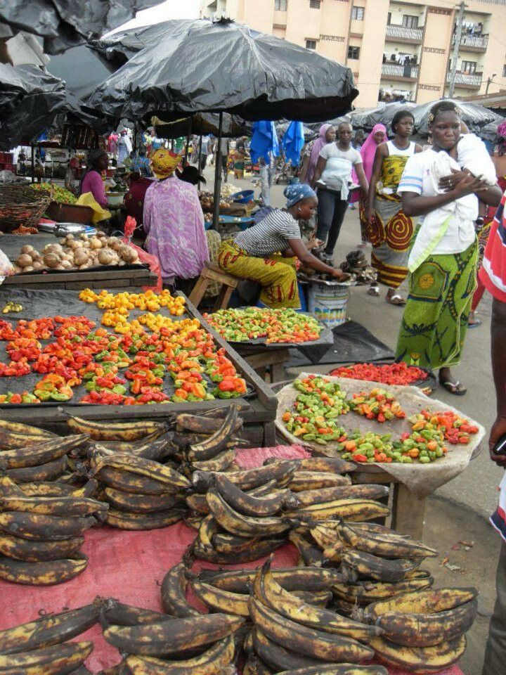

En tant qu'étrangères vivants en France, Sira, Aida et Hajar ressentent une constante nostalgie pour leur patries, toutes situés en Afrique du nord-ouest. Les vacances d'été, elles préfèrent les passer avec leurs fammilles, au Mali, en Guinée et au maroc. Mais en éffectuant des recherches rapides, elles se rendent vite compte du fait que leurs pays n'étaient presque jamais représentées parmi les lieux proposés par les agences de voyage. Pourtant, le tourisme reste l'un des secteurs les plus rentables pour un pays et si leurs pays sont encore considérés en cours développement, le tourisme et l'argent qu'il raporte pourrait être un moteur de ce développement.
The West Agency est née d'une initiative commune, un désir de faire connaitre au monde les plus beaux lieux de l'Afrique de l'Ouest. 40% des profits générés par ce site sont investits localement dans les pays de cette zone.
